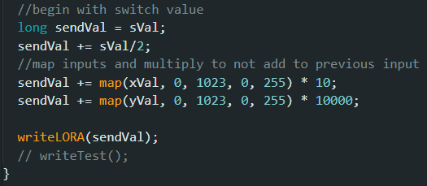

Front Wheels Remote Control Forward
Sending Concatenation of Joystick Values
Unpacking String of Joystick Values

I believe an RC car is a great way to learn many fundamentals that can be applied to many projects of all different types. An RC car (like this one) can bring together mechanical design work, electrical wiring, and programming. At its heart is an Arduino Mega2560 running 4 DC motors in gear boxes that operate a simple car.
While I was originally using NRF24L01 modules for communication, they proved inconsistent in their performance. This led me to discover the long range radio, RYLR998. This seemed like a step up and while more difficult to get started with, it proved to be more reliable. However, it came with a heavy drawback: lower data transfer rates (my current assumption given tests) leading to a 1.5 second delay in messages to the car. This… isn’t ideal for an RC car. Although I had plans to do a fully DIY controller and receiver, I may switch to a ready made unit running an optimal RC protocol, or attempting the NRF24L01 approach again. An overhaul of the body is also in order and on the agenda.